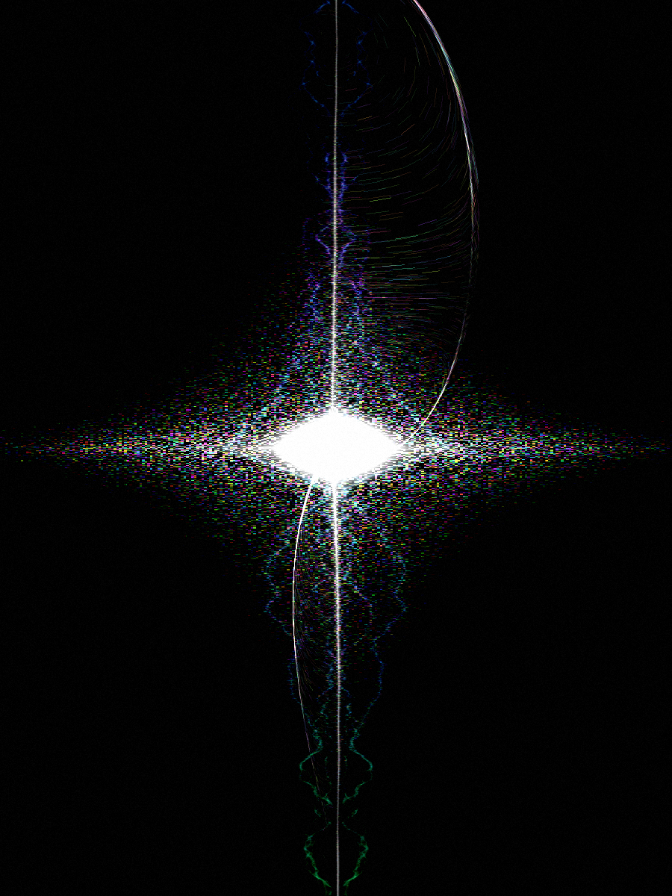
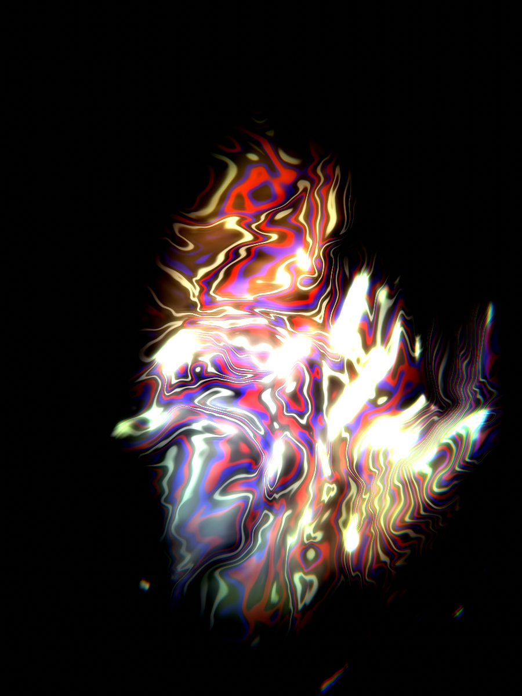

Music in. Visuals out.
An audio-reactive visual engine that runs entirely on your machine.
Nothing uploaded. Nothing subscribed. Just sound becoming light.
matte /mat/ — the mask that shapes an image · lab — where it gets loud
Version 1.0.0
macOS (Apple Silicon) · Windows 10/11 · free friends build
Mac first open: right-click → Open · Windows: More info → Run anyway
Drop a track and drive festival-grade visuals in real time — then render them deterministically to a 4K master. Everything below ships in the free build.
Liquid chrome, particle supernovas, topographic wireframes, gaussian splats, plasma, ink, terrain, starfields — every one wired to the music through TouchDesigner-grade envelope followers.
Type "deep ocean caustics that hit hard on the kick" and the AI designer builds the whole preset — source, palette, particles, FX rack, reactivity — in one shot. Tweak it in words.
AI-separate any song into drums, bass, vocals and instruments. Solo them, mix them live, download raw or polished mp3s — and drive the visuals from the drum stem alone.
An offline deterministic renderer replays your track frame-perfectly through real ffmpeg into ProRes 422 HQ — no dropped frames, any length, ready for the edit.
Drop any GLB and it becomes an audio-displaced hologram of points and wireframe. A 17-asset starter pack ships in the box; a photo can become a 3D splat cloud.
The whole engine runs locally in one app. Your music, your renders and your presets never leave your computer. No account, no telemetry, no cloud.
Untouched captures — no post, no grading. This is what it looks like the moment you press play.


MATTE·LAB to Applicationsright-click → Open (it's an unsigned friends build)MatteLab.exeMore info → Run anyway